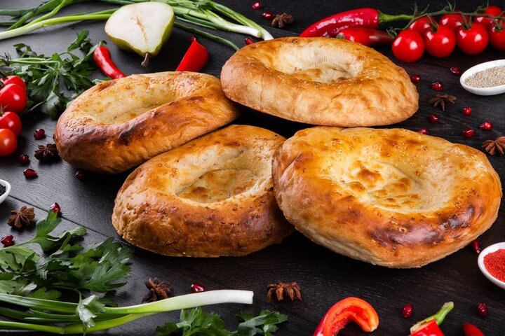

Uzbek Lepyoshki

Description
Traditional Uzbek yeast buns that are soft, fluffy, and delicious.
Ingredients
- 2 ½ cups whole milk
- ½ cup water
- 4 Tbsp unsalted butter
- ½ cup sour cream
- 1 Tbsp granulated sugar
- 1 ½ Tbsp salt
- 1 ½ Tbsp yeast
- 8 cups all-purpose flour, measured then sifted
Glaze
- 1 egg yolk
- 1 Tbsp milk
- Sesame Seeds
Steps
- In a large bowl place the sour cream, sugar, salt and yeast.
- In a saucepan on the stovetop warm the milk, water and butter. The mixture should be very warm, NOT hot. If you keep it on the stove top too long, just let it cool a bit.
- Remove milk mixture from heat and pour into the bowl. Mix everything.
- As you are mixing (with your hand or the mixer), slowly keep adding the flour.
- Once flour is combined, form dough into a ball. Lightly flatten and cover with a lid and then a few kitchen towels to keep the dough warm. (I place foil over a bowl then the towels so the towels don't fall into the bowl.) Let rise about 1 1/2 hours to 2 hours.
- Gently divide dough into four. Form dough into ball-like shapes.
- Spray a large baking sheet with cooking spray.
- On a lightly floured surface, gently start pressing down into the center of the dough and pull edges out. Keep doing this until the dough is stretched to about 17-20 cm in diameter. The center of the dough should be flattened and but not the edges. If you leave the dough at about 17 cm in diameter or a little less, the lepyoshki will be taller. If you prefer the lepyoshki flatter make them longer in diameter. You should be able to fit 2 lepyoshki onto a large baking sheet. Repeat process with remaining dough. (I sometimes make 6 small lepyoshki and kids really enjoy them. If making six small ones, three should fit on a baking sheet. Using two large baking sheets, bake all lepyoshki at ones).
- Beat egg yolk and milk for the glaze.
- With a pastry brush, apply the glaze to the tops and sides of the lepyoshki.
- Sprinkle sesame seeds or poppy seeds in the middle of the lepyoshki. Let rest and rise until they about double in size, about 30-45 minutes.
- Bake at 185°C for about 35-40 minutes. The lepyoshki should be a nice golden color and hard to the touch. Once they have cooled they will soften.
Back to main page